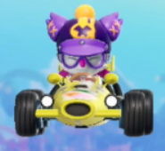
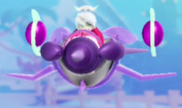

The amazing thing about Chocobo GP is the Story Mode. In this mode you will play through 9 Chapters with 2 races per Chapter. In each Chapter, there are cut scenes in between as you progress into different areas in Story Mode. During this Mode, you will slowly become introduced with all the Characters, Items and Tracks in the game with the exception of Balamb Garden and Midgar as those 2 areas are DLC Areas and are not included in the Story Mode sadly. Below will explain each Track you will play on each Chapter.
The Prologue is an Introduction of the Story Mode involving a racer named Racing Hero X  who has been taken hostage in a mysterious portal. While there, he meets another character named Necroshell  who will help Racing Hero X escape in exchange of taking up residence within Racing Hero X's Body, which in desperation, Racing Hero X accepts and he is freed. Afterwards, Racing Hero X goes and announces a Racing Tournament to everyone at Chocobo Farm with the prize for the winner being any wish of their choosing. Followed by this, you will then travel to new race tracks and meet new characters along with unlockable ones that are unlocked after completing Chapters in the Story Mode.